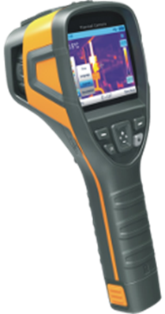

Termografica Infrarroja
La cámara termográfica es una herramienta eficaz para comprobar el rendimiento de la energía que consumimos.
La Termografía Infrarroja es una técnica que nos permite medir y visualizar temperaturas de superficie con precisión, a distancia y sin ningún contacto.
Las cámaras termográficas, son capaces de medir la energía con sensores infrarrojos, esto nos permite medir la energía radiante emitida por objetos y por consiguiente, determinar la temperatura de la superficie a distancia, en tiempo real y sin contacto.
Nos permite saber donde reducir los gastos de la energía, verifica que los equipos funcionen correctamente, comprueba los puntos de perdidas de calor o frio.
Es un método de inspección de equipos eléctricos y mecánicos mediante la obtención de imágenes de distribución de la temperatura.
Aplicación de la cámara termográfica, detección de desequilibrios y sobrecargas eléctricas.
Inspección de motores eléctricos, transformadores, bombas, ventiladores, compresoras, tableros de mando, etc.
¿Por qué usar la termografía infrarroja?
La inspección termográfica en Sistemas Eléctricos tiene como objetivo detectar componentes en estado defectuosos o próximos a fallar basándose en la elevación de la temperatura como consecuencia de un aumento Anormal de su Resistencia Óhmica.
Causas:
Conexiones flojas o sueltas, Falta de apriete de terminales, Conexiones afectadas por corrosión, Conexiones sucias, contactos sucios.
Contactos desgastados, Degradación de materiales aislantes, Fallas mecánicas, soldaduras deficientes, Fallas mecánicas al interior de elementos(no visibles)
En el mercado eléctrico, la técnica de mantenimiento debe necesariamente desarrollarse bajo el concepto de reducir tiempos de Intervención, efectividad en la acción y certeza predictiva por posibles anomalías futuras.
Aplicaciones:
Instalaciones y líneas eléctricas de alta y baja Tensión.
Cuadros, conexiones, bornes, transformadores, fusibles, empalmes eléctricos, motores eléctricos, generadores, bobinados, etc.
Reductores, frenos, rodamientos, acoplamientos y embragues mecánicos.
Hornos, calderas e intercambiadores de calor, instalaciones de frío industrial y climatización, líneas de producción, corte, prensado, forja, tratamientos térmicos.
Beneficios:
Elimina caídas de energía inesperada.
Detecta problemas rápidamente sin interrumpir el funcionamiento del equipo.
Minimiza el mantenimiento preventivo y el tiempo perdido en localizar los problemas.
Asegurar el funcionamiento óptimo y continuo de equipos y sistemas.
No necesita contacto FISICO con la instalación o el equipo, con lo cual NO ES NECESARIO PARAR la instalación para la realización de la termografia.
Evitar la interrupción brusca de los procesos o equipos, pudiendo realizar paradas programadas, evitando así costosos daños en los equipos.
Reduce el tiempo de reparación por la localización precisa de la Falla.
Realización de un correcto mantenimiento preventivo y predictivo de sus instalaciones eléctricas y mecánicas, al poder comprobar los posibles defectos mucho más rápido y eficaz.
Evitar posibles incendios por sobrecalentamientos en sus instalaciones.
Ahorro energético